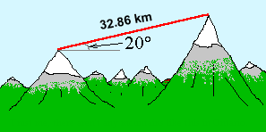

Let's practise the Max/Min Method with one more example.
Question. The distance between two mountain tops is known to be 32.86 km. For the purpose of the present question, let's take this result to have negligible uncertainty. The angle q between the line of sight from one top to the other has been measured to be 20.0o ± 0.6o. What is the horizontal distance between the two mountain tops and the absolute and relative uncertainty in this distance?

Answer. Let x denote the unknown horizontal distance between the two mountain tops and d the 32.86-km distance from top to top. Then, since d is the hypotenuse in a right-angle triangle,
x = d cos q.
Since the cosine is a decreasing function of q around q = 20o, the maximum value of x is obtained for the mininum value of q. Thus,
xmax = 32.86 cos 19.4o = 30.99 km .
Similarly, the minimum value of x is obtained for the maximum value of q. Thus,
xmin = 32.86 cos 20.6o = 30.76 km .
Thus the horizontal distance between the two mountain tops is in the range
30.76 km < x < 30.99 km .
One can also write this result in the form
x ± Dx = 30.88 km ± 0.12 km .
Comment. The uncertainty Dx is equal to the (absolute value of the) change in the value of the function d cos q as q increases from 20o to 20o + Dq, where in our case Dq = 0.6o. We need to take the absolute value of the change because an uncertainty, by definition, is a positive quantity. In the present case, the change of the function would be negative because the cosine is decreasing around q = 20o.
There is a quick way of finding the change in the value of a function as the argument of the function changes. Although this quick way involves an approximation, the so-called linear approximation to a function, this approximation is good enough for the purposes of error propagation unless the error is very large. This method will be used on Page 4 to determine the propagation of uncertainties in the preceding two examples once more.